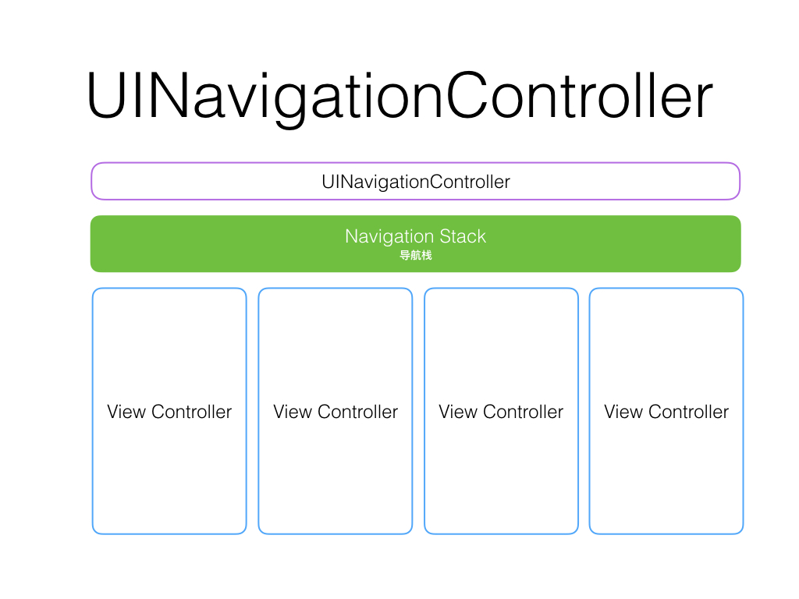
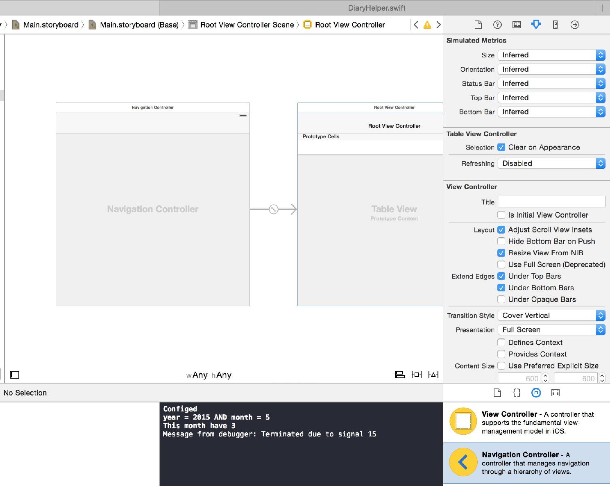
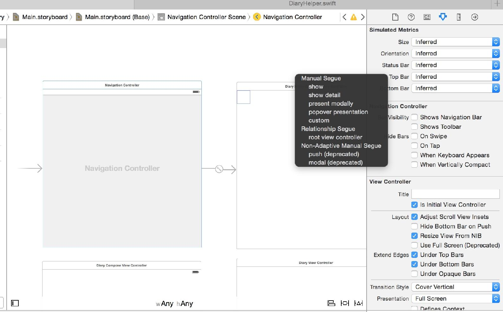
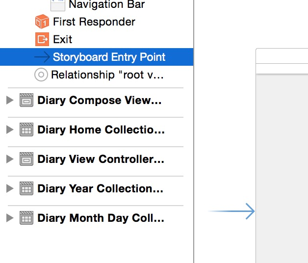
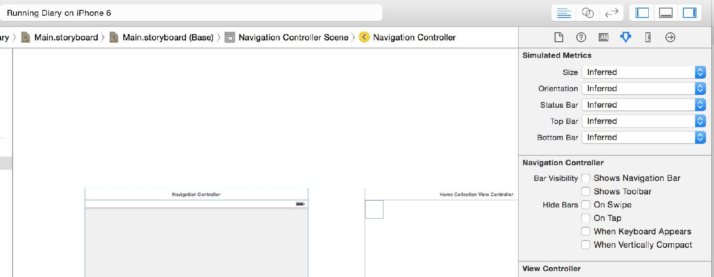
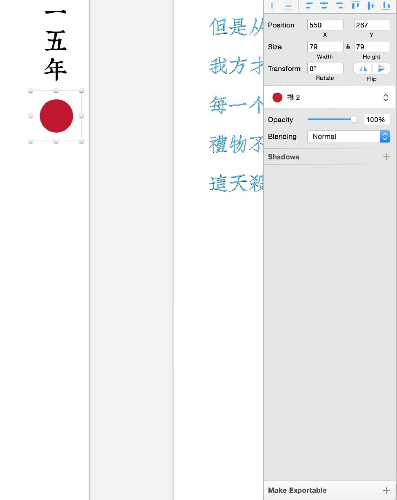
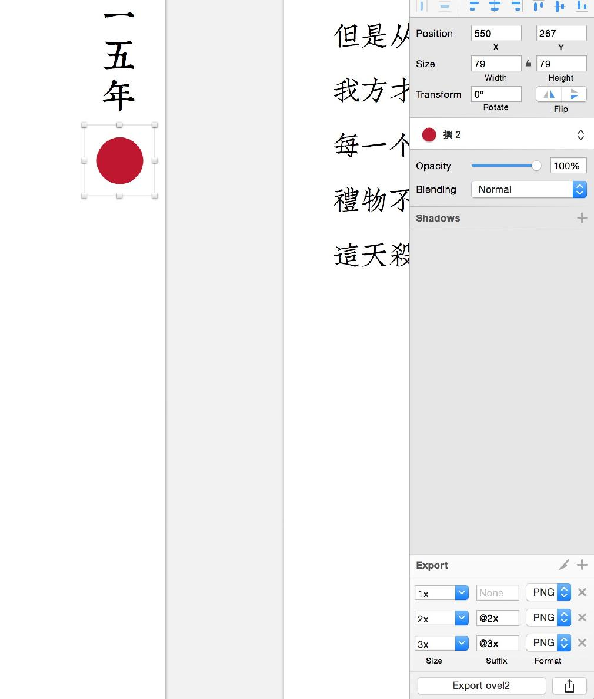
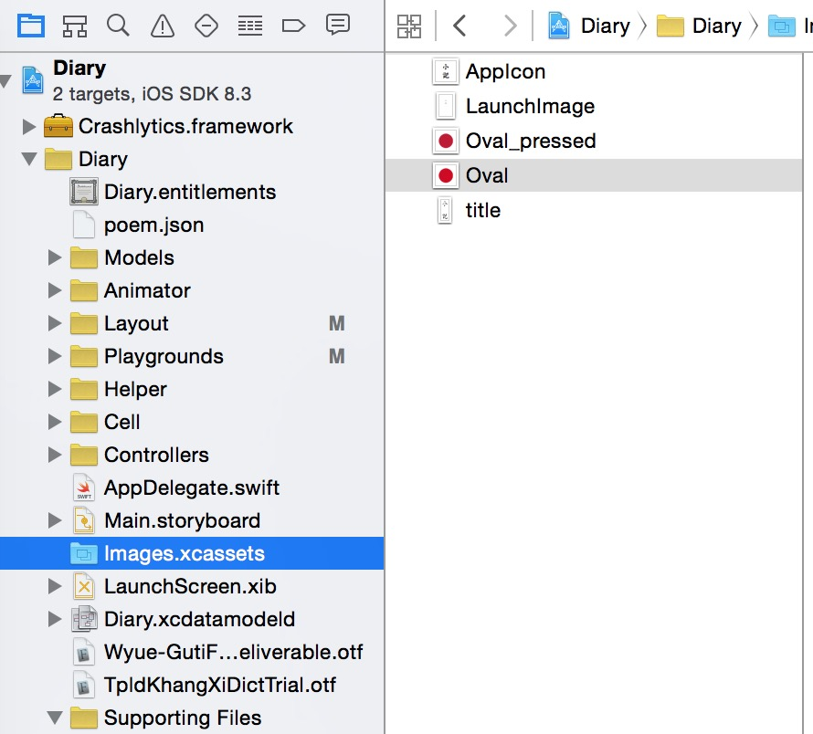
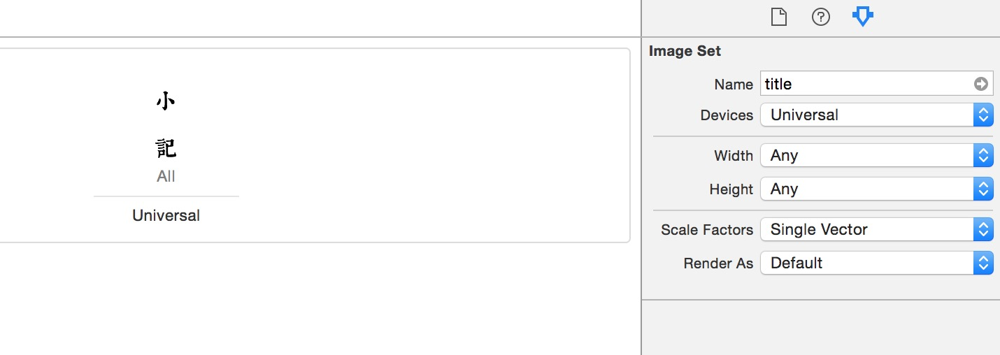
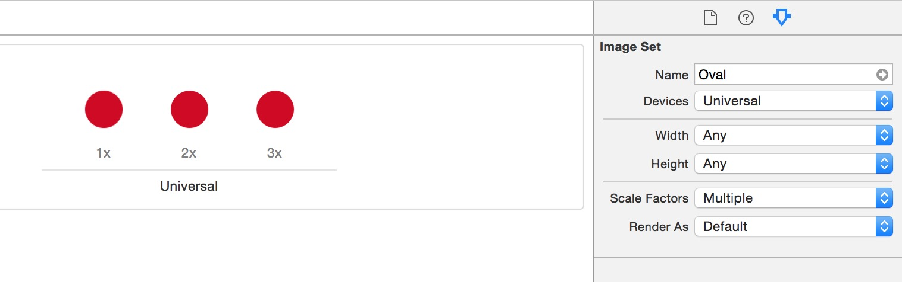

点击年就是显示月份咯，而月和年并没有很大区别。除了字体从康熙字典换成了文悦古仿宋。
当然，此刻你点击是没有什么发生，因为还有一个问题需要回答。当点击的时候，该做什么。
override func collectionView(collectionView: UICollectionView,
didSelectItemAtIndexPath indexPath: NSIndexPath) {
}
在上面的代码里写入如下片段
let identifier = "DiaryYearCollectionViewController"
var dvc = self.storyboard?.
instantiateViewControllerWithIdentifier(identifier)
as! DiaryYearCollectionViewController
// 获取 DiaryYearCollectionViewController
dvc.year = 2015
// 指定是 2015 年的月份
self.navigationController!.pushViewController(dvc, animated: true)
// 页面跳转
instantiateViewControllerWithIdentifier 是 Storyboard 的一个方法，可以根据 Storyboard 里给 ViewController 设置的 identifier 获取其实例。
这时候点击年…… 依旧不能跳转，因为 DiaryYearCollectionViewController 这个 Controller 还没有。
仿照之前在年之外的创建方法，我们创建一个 DiaryYearCollectionViewController，DiaryYearCollectionViewController 同时需要一个 year 的 Int 属性，存储是哪一年。
import UIKit
class DiaryYearCollectionViewController: UICollectionViewController {
var year:Int!
override func viewDidLoad() {
super.viewDidLoad()
}
}
不过完成了这步还是依旧不能跳转，因为 self.navigationController 这个东西还不存在。
我们通常会建立不同的 UIViewController 来显示不同的页面，而页面间如何切换便成了一个经常遇到的问题。
UINavigationController 是 iOS 里管理页面切换的家伙，他解决了页面之间切换的逻辑问题。默认会带有一个导航栏，通过 pushViewController 可以切换到下一个页面，popViewController 可以返回上一页，每天你在 iOS 中使用的侧滑返回也是其提供的。

UINavigationController 有一个 viewControllers 的属性，这个数组就是导航栈，里面存储了在整个页面跳转过程中显示的 ViewController。
先在要给我们的 App 增加一个最外围的 UINavigationController。
回到 Main.storyboard
增加一个 UINavigationController

然后删掉它附赠的 UITableViewController
按住 Control 然后在 UINavigationController 上按住左键，拖拽到 HomeCollectionViewController 上选择 rootViewController

确认已经把 Storyboard Entry Point 移动到 UINavigationController 上

另外一个需要注意的就是要 Hide 掉 Navigation Bar，在右边的 Storyboard 上取消 Show Navigation Bar 上的对勾即可。

重新运行 App，页面就可以切换到年视图了。
点击月份进入这个月视图，月视图里面，显示的就是日记了。
我们需要在月和年的视图右上角加上年和撰，月单独的有个红色的月份显示在右边。
年份和月份并无太大不同，只是颜色和字体略有区别，撰这个按钮倒是值得一提。
UIButton 是 iOS 中一个非常常用的控件，用来制作界面的按钮，通过代码创建一个 UIButton 的方法非常简单
let button = UIButton(type: UIButtonType.Custom)
// 创建 Custom 类型的 Button，Custom 类型不适用任何系统样式
// 方便我们自定义 Button
button.frame = CGRect(x: 0, y: 0, width: 100, height: 50)
// 通过 frame 属性自定义 Button 大小和位置
button.setTitle("好的", forState: UIControlState.Normal)
// 一个 Button 有多种状态，Normal 是默认状态
button.setBackgroundImage(UIImage(named: "button_bg"),
forState: UIControlState.Normal)
// 设置按钮默认状态下的背景
button.addTarget(self, action: "newCompose",
forControlEvents: UIControlEvents.TouchUpInside)
UIButton 这一类的可交互控件有很多种状态
| 常用属性 | 描述 |
|---|---|
| Normal | 默认状态 |
| Highlighted | 被按住的高亮状态 |
| Disabled | 禁用状态 |
| Selected | 选中状态（主要是针对 Tab 这类控件） |
通过 Button 的 addTarget 方法，我们可以指定在某个交互时，Button 需要触发哪个 target 的 action。
| 常用属性 | 描述 |
|---|---|
| TouchDown | 按下 |
| TouchUpInside | 在控件中心按下（避免误触） |
| TouchUpOutside | 按下后滑出控件松手 |
| TouchCancel | 取消触摸（被意外终止） |
| ValueChanged | 数值变化（主要针对滑块控件） |
因为这个 Button 会在多处出现，所以弄一个方法来简易生产这样的 Button
func diaryButtonWith(text text: String,
fontSize: CGFloat,
width: CGFloat,
normalImageName: String,
highlightedImageName: String) -> UIButton {
let button = UIButton(type: UIButtonType.Custom)
//创建自定义 Button
button.frame = CGRectMake(0, 0, width, width)
//设定 Button 的大小
let font = UIFont(name: "Wyue-GutiFangsong-NC",
size: fontSize) as UIFont!
let textAttributes: [String : AnyObject] = [
NSFontAttributeName: font,
NSForegroundColorAttributeName: UIColor.whiteColor()]
let attributedText = NSAttributedString(string: text, attributes: textAttributes)
button.setAttributedTitle(attributedText, forState: UIControlState.Normal)
//设置 Button 字体
button.setBackgroundImage(UIImage(
named: normalImageName),
forState: UIControlState.Normal)
//设置默认 Button 样式
button.setBackgroundImage(UIImage(
named: highlightedImageName),
forState: UIControlState.Highlighted)
// 设置 Button 被按下时候的样式
return button
}
在 viewDidLoad 里面，通过以下代码添加这个 Button
var composeButton = diaryButtonWith(text: "撰",
fontSize: 14.0,
width: 40.0,
normalImageName: "Oval",
highlightedImageName: "Oval_pressed")
composeButton.center = CGPointMake(yearLabel.center.x,
38 + yearLabel.frame.size.height + 26.0/2.0)
composeButton.addTarget(self, action: "newCompose",
forControlEvents: UIControlEvents.TouchUpInside)
self.view.addSubview(composeButton)
Oval 是单独绘制的一个红色圆形，pressed 则是颜色略有不同的圆形，在 Sketch 里，你可以这样简单的导出图片。
选中你要导出的图形

点击 Make Exportable
然后增加你需要的尺寸

导出后，把他们拖到 XCode 的 Images.xcassets 里面即可

jpg 和 PDF 都是不错的类型，PDF 只需要一张，由 XCode 在编译的时候自动生成多个尺寸，而 jpg 需要你手动添加多个尺寸，对于不同的类型，jpg 的 Scale Factors 是 Multible, PDF 的是 Single Vector。


不过 PDF 也有一定的局限性，例如不能体现复杂的图层效果，对于透明的处理上也会有些问题。
按照我们的交互设计，这里的页面切换方式不应该是从右边推进进来，好在 iOS 里已有自定义转场这样的非常有趣的技术。
首先在 HomeCollectionViewController 的 viewDidLoad 里面指定
self.navigationController!.delegate = self
在 HomeCollectionViewController 的底部增加一个 Extension
extension HomeCollectionViewController: UINavigationControllerDelegate {
}
Extension 可以扩展类能够实现的功能。
这时候 navigationController 就会询问具体的转场方法。
func navigationController(navigationController:
UINavigationController,
animationControllerForOperation operation:
UINavigationControllerOperation,
fromViewController fromVC: UIViewController,
toViewController toVC: UIViewController) ->
UIViewControllerAnimatedTransitioning? {
}
我们先增加一个 DiaryAnimator
import UIKit
class DiaryAnimator: NSObject,
UIViewControllerAnimatedTransitioning {
var operation:UINavigationControllerOperation!
//转场时长
func transitionDuration(transitionContext:
UIViewControllerContextTransitioning) -> NSTimeInterval {
return 0.4
}
}
接着我们在 DiaryAnimator 这个类里加入转场变化的具体实现
//转场的参数变化
func animateTransition(transitionContext:
UIViewControllerContextTransitioning)
{
let containerView = transitionContext.containerView()
//获取转场舞台
let fromVC = transitionContext.
viewControllerForKey(
UITransitionContextFromViewControllerKey)
let fromView = fromVC!.view
//获取从哪个场景开始转
let toVC = transitionContext.
viewControllerForKey(
UITransitionContextToViewControllerKey)
let toView = toVC!.view
//获取要转去哪个场景
toView.alpha = 0.0
//设置新场景透明度
// UINavigationControllerOperation.Pop 用来判断是转入还是转出
if operation == UINavigationControllerOperation.Pop {
toView.transform = CGAffineTransformMakeScale(1.0,1.0)
// 如果是返回旧场景，那么设置要转入的场景初始缩放为原始大小
}else{
toView.transform = CGAffineTransformMakeScale(0.3,0.3);
// 如果是转到新场景，设置新场景初始缩放为 0.3
}
containerView!.insertSubview(toView,
aboveSubview: fromView)
// 在舞台上插入场景
}
以上代码就完成了开始动画前各个元素的就位工作，继续在 func animateTransition() 的最后加入一个 UIView.animateWithDuration() 来实现最终动画
UIView.animateWithDuration(
transitionDuration(transitionContext),
delay: 0,
options: UIViewAnimationOptions.CurveEaseInOut,
animations:
{
if self.operation == UINavigationControllerOperation.
Pop {
fromView.transform = CGAffineTransformMakeScale(3.3,3.3)
// 放大要转出的场景
} else {
toView.transform = CGAffineTransformMakeScale(1.0,1.0)
// 设置新场景为原始大小
}
toView.alpha = 1.0
}, completion: { finished in
transitionContext.completeTransition(true)
// 通知 NavigationController 已经完成转场
})
接下来把转场代码写进去，就可以生效啦
func navigationController(navigationController:
UINavigationController,
animationControllerForOperation operation:
UINavigationControllerOperation,
fromViewController fromVC: UIViewController,
toViewController toVC: UIViewController) ->
UIViewControllerAnimatedTransitioning? {
var animator = DiaryAnimator()
animator.operation = operation
return animator
}
按照这个流程，我们还需要再实现一个 DiaryMonthDayCollectionViewController 来显示月份下的日记。
你可以在 Github 找到我们本章的工程文件